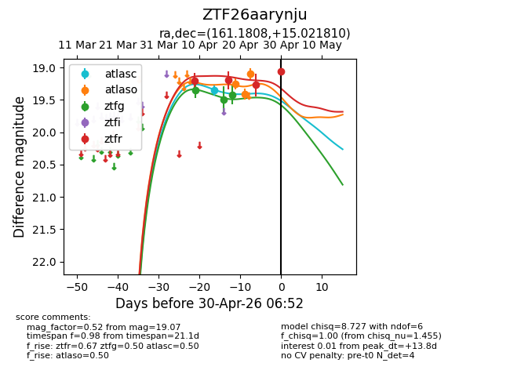
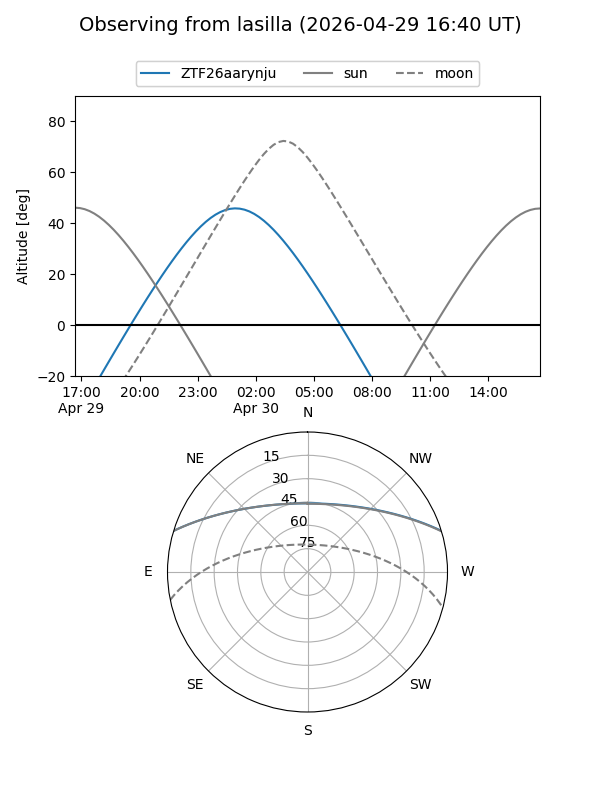
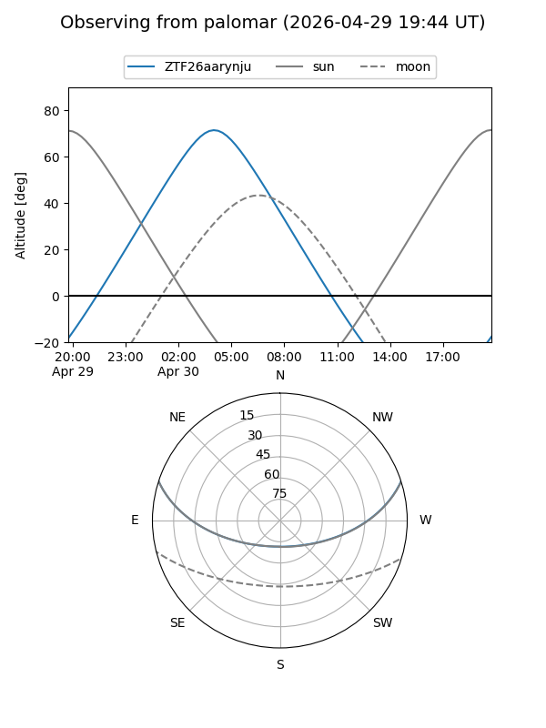
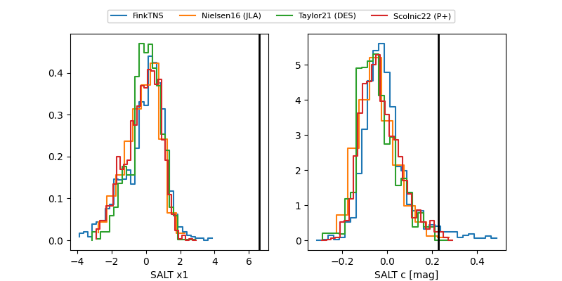

ZTF26aarynju
Target ZTF26aarynju at 2026-04-30 06:57
Aliases and brokers:
FINK: link
Lasair: link
ALeRCE: link
alt names
ZTF26aarynju (ztf,fink_ztf)
Coordinates:
equatorial (ra, dec) = 161.1808,+15.02181
equatorial (HMS+DMS) = 10:44:43.38,+15:01:18.51
galactic (l, b) = (228.7931,+58.17779)
Flags:
Photometry:
last atlasc=19.35, atlaso=19.09, ztfg=19.42, ztfr=19.07
1 atlasc, 3 atlaso, 3 ztfg, 4 ztfr detections
Lightcurve

Visibility


Additional plots
